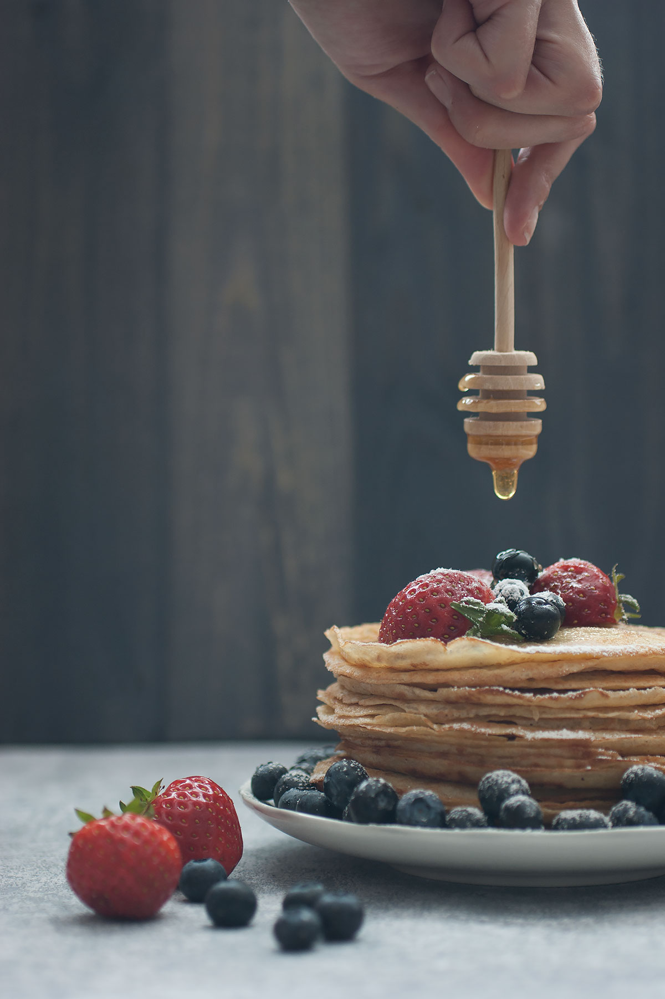

Recept på Dinkelpannkakor
Ingredienser
- 3 dl vetemjöl
- 1 tsk salt
- 3 ägg
- 5 dl mjölk
Blanda mjöl och salt i en bunke. Vispa i hälften av mjölken och vispa till en slät smet. Vispa i resten av mjölken och äggen.Smält smöret i stekpannan och vispa ner i smeten. Stek tunna pannkakor av smeten i en stek- eller pannkakspanna.Servera med sylt, bär eller frukt.